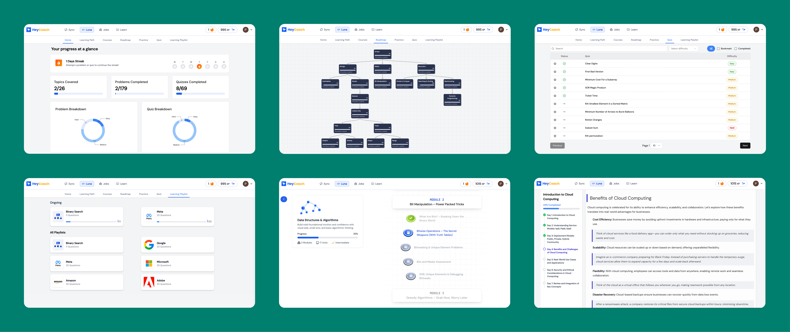
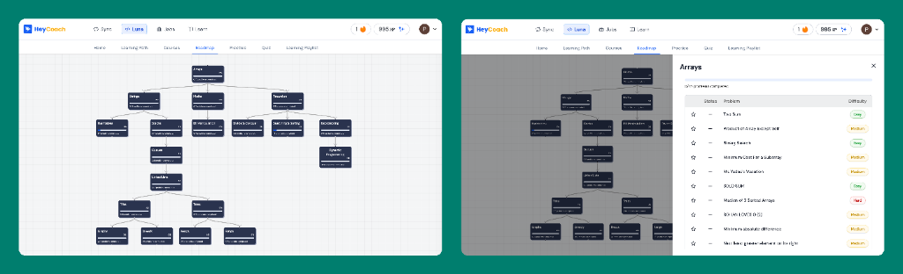
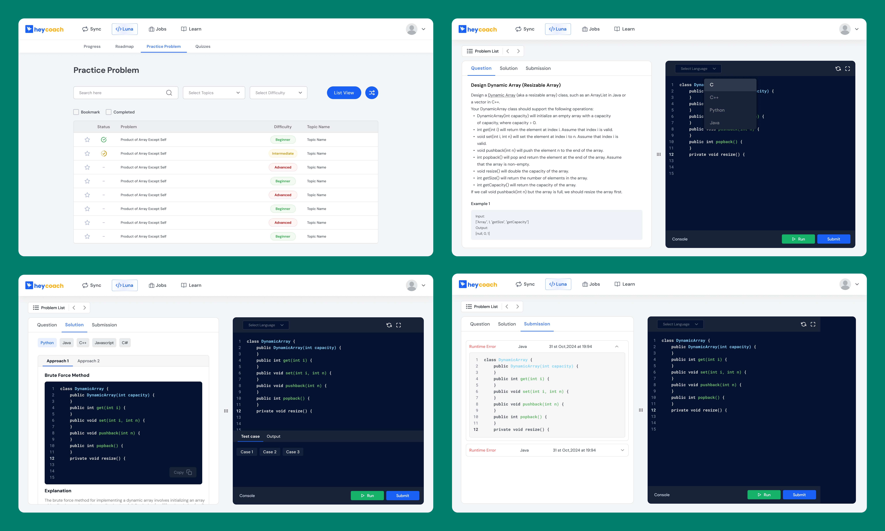
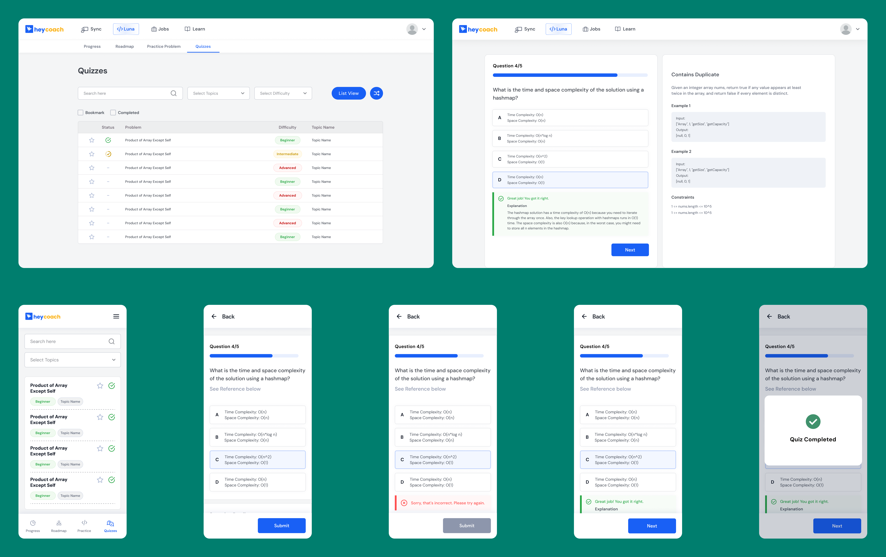
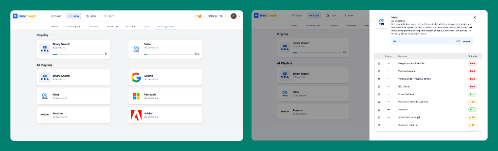
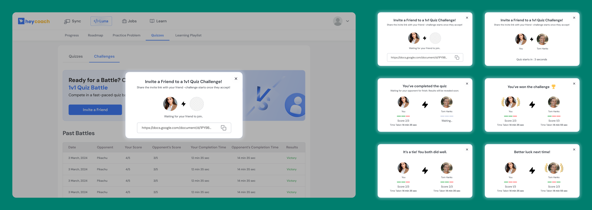
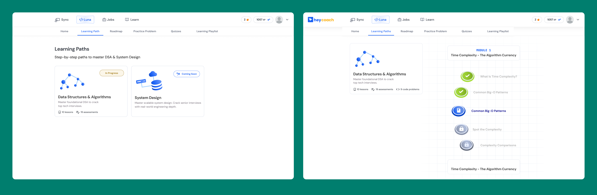
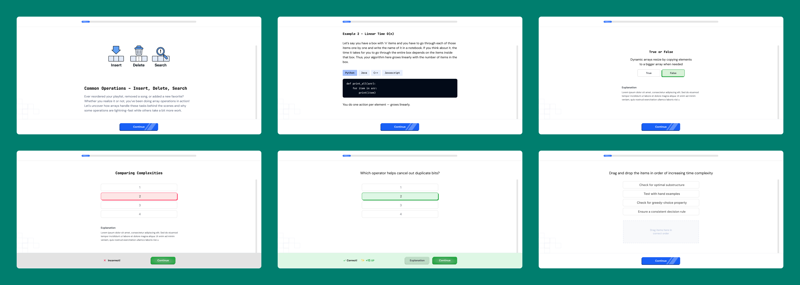

HeyCoach had a large DSA content library for paid users but no engagement layer for the others. Users arrived, felt overwhelmed, and left. Luna was built to fix that — a gamified, habit-first learning companion that sat at the top of the funnel and created a natural path toward paid courses.

I owned Luna end-to-end for the MVP — from problem discovery and competitive analysis through to UX flows, gamification system design, and collaboration with engineering and content teams to ship.
Luna was built iteratively across three phases. The process followed a double-diamond shape — research and definition first, then rapid scoping and execution, then measurement and reflection.
HeyCoach was a paid edtech startup offering DSA and System Design courses to software engineers preparing for product company interviews. The core product was strong — structured curriculum, in-house coding editor, mentor support. But the business had a conversion problem that no amount of content investment was solving.
Marketing was acquiring leads. Those leads were landing on the website, browsing the problem library, and leaving — without buying. The existing problem library was open to all users but offered no structure, no guidance, and no reason to return. First-time visitors had no way to experience progress before being asked to spend money.
"There's no product that lets a user experience progress before committing to a long-form course. We need something that keeps them coming back." — Founder brief
The business case for Luna was clear: if we could keep leads engaged long enough to experience value, conversion to paid would follow. Luna wasn't a product to monetise directly — it was a product to create the conditions for monetisation.
Before scoping anything, I mapped the problem from two angles — business and user. Both pointed to the same gap: the absence of structure, feedback, and visible progress.
HeyCoach had existing learner feedback, support threads, and usage data from the problem library. Three signals kept appearing:
Product vision: Build a gamified DSA companion that transforms interview prep from a checklist of problems into a guided, habit-forming learning journey — using HeyCoach's existing content, not new investment.
The MVP constraint was clear: use HeyCoach's existing problem library and code editor. Don't ask engineering to rebuild infrastructure — layer a new experience on top of what existed. This decision cut the MVP timeline significantly and let us validate the engagement model before investing in new content.
I scoped Luna into three phases based on a simple principle: ship the core learning loop first, then add engagement mechanics, then add depth. Each phase had to prove itself before the next was built.
Scoping is a PM's core skill. These features were discussed and explicitly excluded from MVP to keep the loop tight:
Below are the three core screens from Phase 1 — the MVP learning loop.
Replaced the flat problem list with a structured visual path through core DSA topics. Users could see exactly where they were, what they'd completed, and what came next — reducing overwhelm and eliminating the "where do I start?" paralysis.

Roadmap view — locked/unlocked progression removes decision fatigue. Users always know what's next.
The core of the learning loop. A focus-driven IDE experience that bridges the gap between theory and practical coding. Each problem is curated to reinforce the concepts learned in the roadmap, with real-time feedback and detailed solutions.

Practice flow — comprehensive problem sets, integrated IDE, and instant submission feedback.
Short, concept-testing quizzes after each topic. The goal wasn't assessment — it was reinforcement. Quizzes were capped at 5 questions and awarded XP on completion, making them feel like a reward rather than a test.

Quiz screen — progress bar, clear feedback states, XP reward on completion. Capped at 5 questions to feel completable.
Company-specific preparation playlists (Google, Amazon, Flipkart) gave goal-oriented users a focused track. Byte-sized lessons — 2–3 minute concept explanations — were embedded in the daily task list to build conceptual understanding without interrupting the coding flow.




These were the four decisions where I had to make a real call — not just execute a brief, but choose a direction when reasonable alternatives existed.
Luna's MVP was scoped entirely around what HeyCoach already had. This was a deliberate PM call: validate the engagement model first, invest in new content only after. It cut the timeline significantly and meant we could test the core hypothesis without committing to infrastructure that might not need to exist.
The default mental model for a DSA platform is a search bar. We deliberately didn't make this the entry point. Luna opened on the roadmap. This was a controversial call — search-first felt more flexible. But the data was clear: users weren't failing because they couldn't find problems. They were failing because they didn't know where to start. The 45% roadmap engagement in the first month validated it.
Phase 2 needed a social layer. The obvious choice was a leaderboard — common in edtech, low lift, familiar. I argued against it. Leaderboards motivate the top 10% and demotivate everyone else. Battles were peer-to-peer, opt-in, and shareable via link — social motivation that worked between specific people, not anonymous rankings. 208 battles from 24 users became Luna's highest per-user engagement signal.
Quiz questions were based on the same concepts as the coding problems — just tested differently. In real interviews, candidates get conceptual questions around the problems they solve, not just "write the code." Capping quizzes at 5 questions and awarding XP on completion shifted the psychology: a quiz felt like a reward for finishing a topic, not a gate to pass through.
Luna ran through the summer of 2025 across three shipped phases. The product didn't reach the stage where paid conversion could be cleanly measured — but the engagement data told a clear story about what was working and what the next iteration would have tackled.
Across the product's active period, 186 users engaged with problems and quizzes — generating real usage data across all core features:
The battles feature — a 1v1 coding challenge mode — generated a disproportionately high engagement signal. 24 users created 208 battles between them. That's 8.7 battles per active user, far higher than any other feature's per-user engagement. It was the strongest indicator that social and competitive mechanics deserved more surface area in v2.
208 battles from 24 users was the clearest signal of what to build next — a social competitive layer. Users who engaged with battles were self-selecting as the most motivated segment of Luna's audience.
The gamification system had a wide spread of engagement. The highest XP earned was 950, with an average of 278 across active users — showing meaningful differentiation between casual and committed users. The streak data told the harder story: the highest streak was 32 days, but the average was 1.55 days across 137 tracked users.
This gap between average and top performers is the most honest summary of where Luna was as a product: strong for motivated users, not yet strong enough to convert passive users into consistent learners. That was the problem I'd have tackled in v2.
Luna couldn't ask for money, email, or time before showing value. That constraint made the product better. Every feature had to justify itself by what it gave users, not what it asked of them.
A 32-day highest streak versus a 1.55-day average means the mechanic worked brilliantly for already-motivated users — but didn't pull in the users who needed the most help. V2 would have focused on the critical first 7 days: tighter onboarding, a lower bar for the first streak milestone, and push notifications specifically designed for day-2 and day-3 re-engagement.
Luna had 52.7% monthly retention — a genuinely strong number. But I couldn't tell leadership how many retained Luna users eventually bought a course, because we launched without clean attribution tracking. The engagement story was strong. The business story was incomplete. Next time, analytics setup comes before feature scoping.
Make Battles a core surface, not a side mode. Put the first-week onboarding loop under a microscope before any new features. And ship with a funnel dashboard wired to downstream conversion from day one.
Open to PM, Product Designer, and Product Analyst roles at product companies and fintechs.